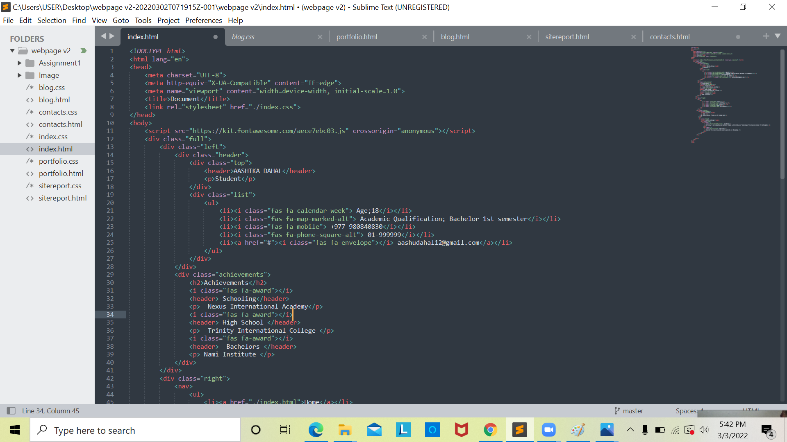
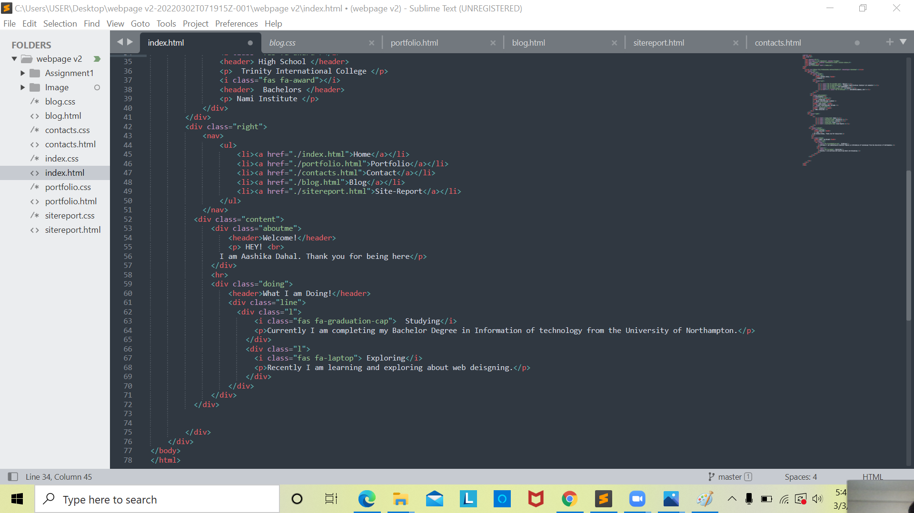
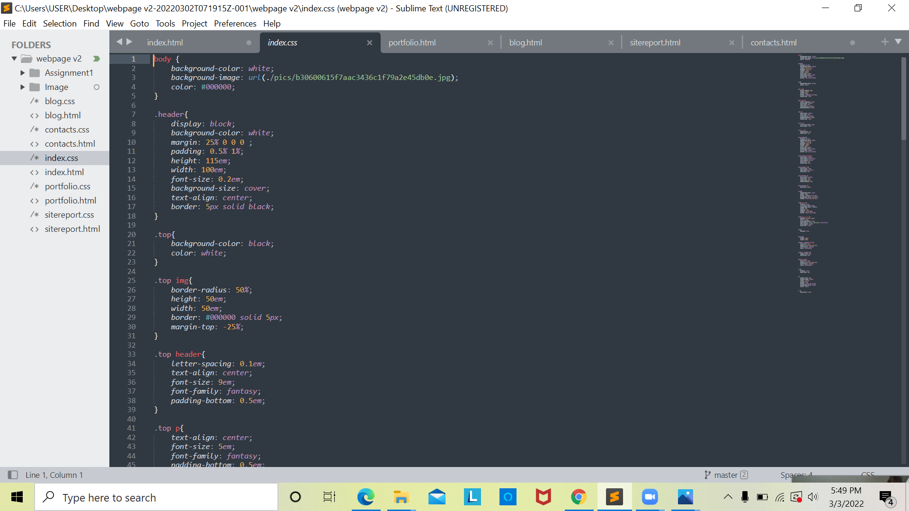
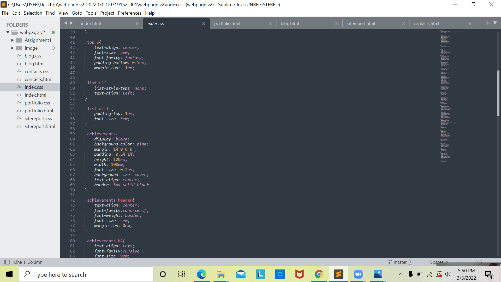
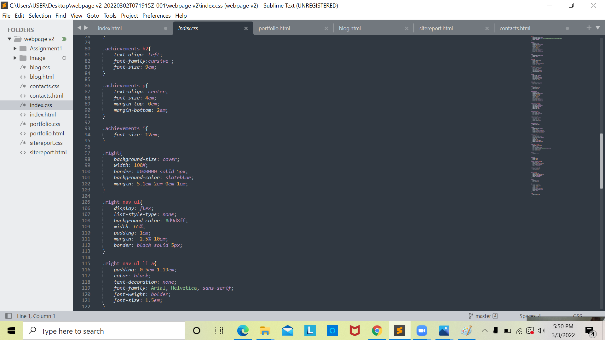
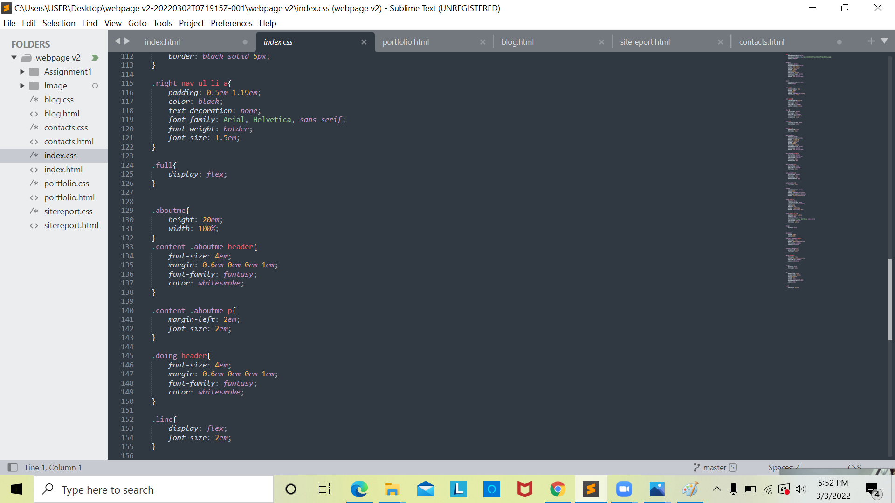
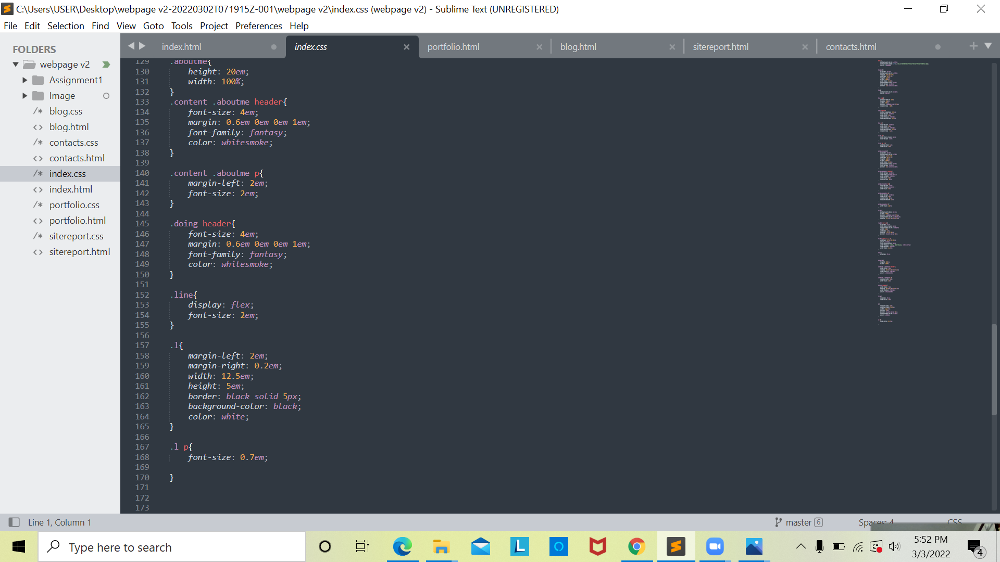

I am in a learning phase of web development. These things are new to me but I am slowly grabbing it. Web developing has helped in exploring and creating sites. In my assignment I have made simple and user friendly slides. In my opinion, It can sometimes be complicated to create a website but I always give my best to do it. Sometimes the code I use would but work or gets crashed. I hope I get better at it. I am not into over designed websites so I am made my site a simple. Doing all of this was very difficult to me because creating a whole new site was new to me. I have used rectangle shapes and pastel colors in my site to make it look appealing. Making this website has helped me learning more about web developing. I hope I get better at it day by day. I have used same pattern for all the codes in this website.
 I have used Aashika as a header to represent my name. Header 2 is for achivements. I have also used big WELCOME header to make it more appealing. I have used charset for character set and meta tag to specify the character set.I used scriptsrc to get some few character which are not available in html and I have also placed the link of it. For example, fas fa - calender for calender symbol retrive from script src tag. I used Doctype to indicate that the page is an HTML.
    Talking about the color I have choosed basic colors. It is my personal preference.For font I have used ariel,comic, sans_serif, cursive and Helvetica.